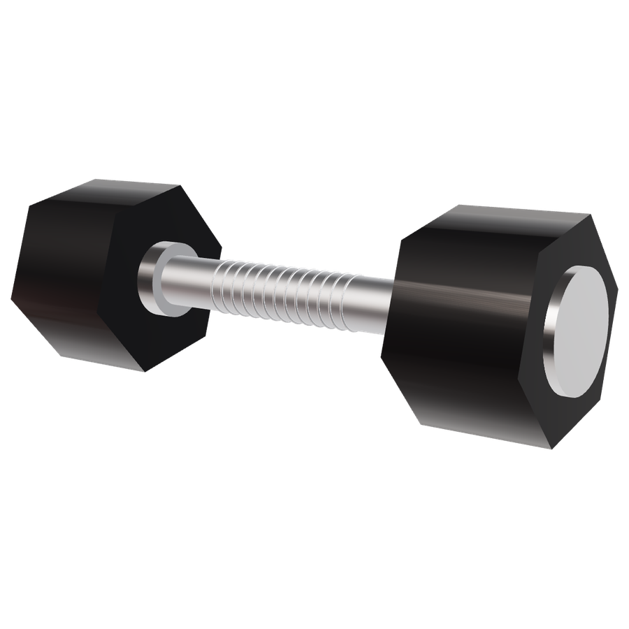
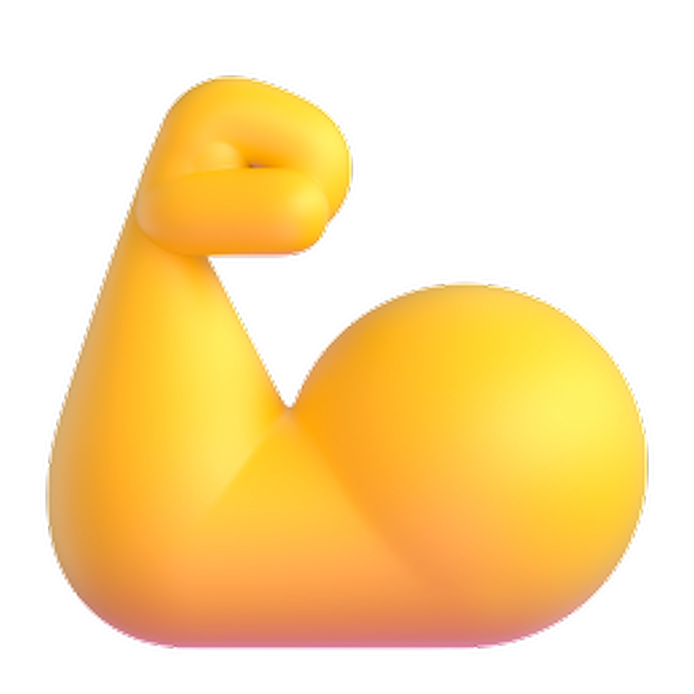
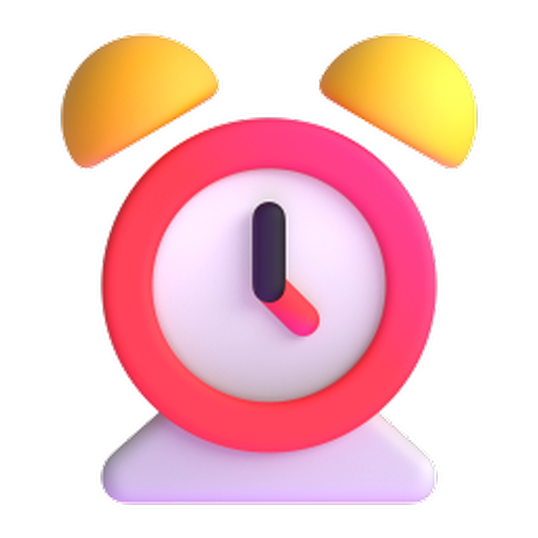

Your
muscles
don't
grow
in
the
gym.

Training
just
breaks
them
down.

They
grow
while
you
recover,
for
up
to

0
1
2
3
4
HOURS
Three
things
build
muscle:
OVERLOAD
PROTEIN
SLEEP
Not
more
hours.
Smarter
recovery.
Growth
is
built
while
you
rest.
@YOURHANDLE